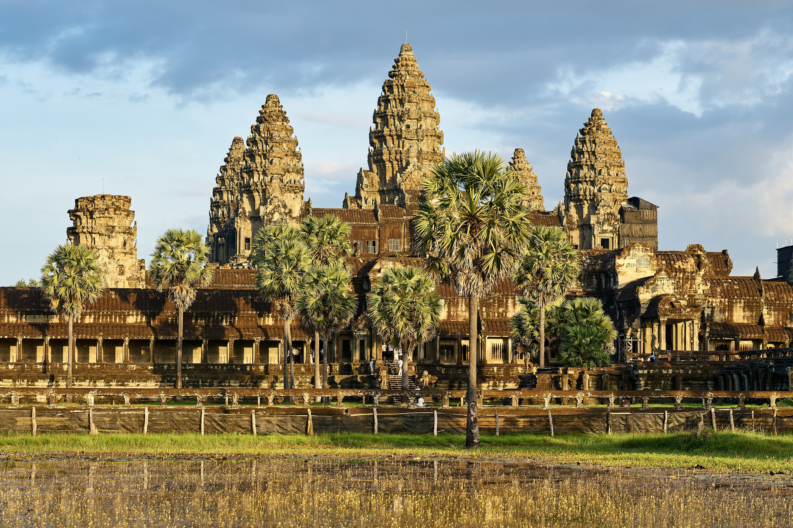

Echoes of an Empire
Travel back to the Khmer Empire and uncover the rulers, beliefs, and events that shaped Angkor Wat into one of the world's greatest monuments.
Kingdom of Wonder
Journey through Cambodia's most iconic temple, discover its history, sacred architecture, ancient carvings, and practical travel guidance.
Our mission is to make the history, architecture, and cultural significance of Angkor Wat accessible through a modern digital experience.
By combining historical knowledge, visual storytelling, and practical travel resources, this guide encourages every visitor to appreciate one of humanity's greatest architectural achievements.

DISCOVER THE WONDERS OF THE KHMER EMPIRE

BEYOND THE GATES
Behind its silent stone walls lies more than a temple. Angkor Wat holds forgotten stories of kings, sacred beliefs, celestial towers, and carvings that have watched over Cambodia for centuries.
Begin at the western causeway and follow the path deeper into an ancient world—where every corridor, shadow, and stone detail invites you to discover what remains unseen.
Travel back to the Khmer Empire and uncover the rulers, beliefs, and events that shaped Angkor Wat into one of the world's greatest monuments.

From the five sacred towers to hidden galleries and detailed bas-reliefs, every structure reveals a deeper meaning.

See Angkor Wat through breathtaking views, sunrise reflections, ancient corridors, and detailed stone carvings captured in timeless images.
BEGIN YOUR EXPLORATION
Use these pages as the foundation for a richer Angkor Wat travel and culture website.
Learn how Angkor Wat was built, changed religion, and became a national symbol.
Understand the towers, galleries, moat, causeway, and mountain-temple layout.
Prepare with sunrise advice, respectful dress notes, route ideas, and travel tips.

8 highlights

5 stories


17 details

Ready to explore
Start with the visitor page for practical notes before expanding the site with maps, route cards, and booking ideas.